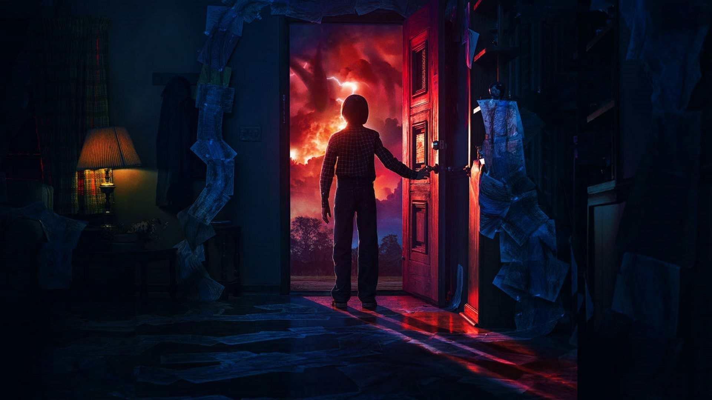
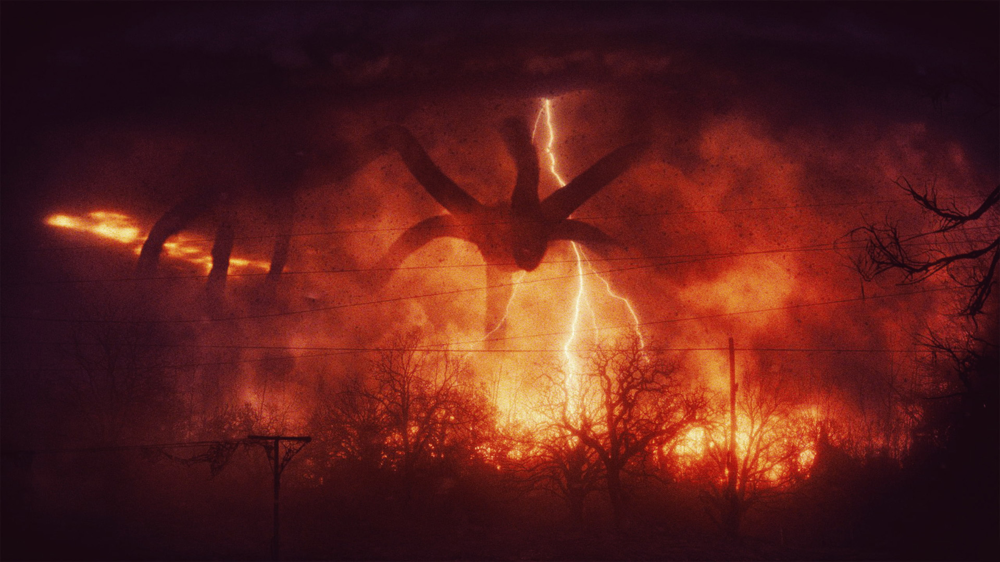
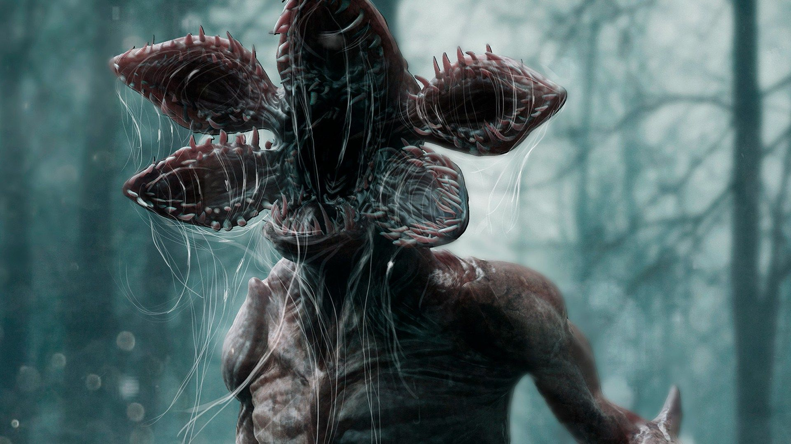
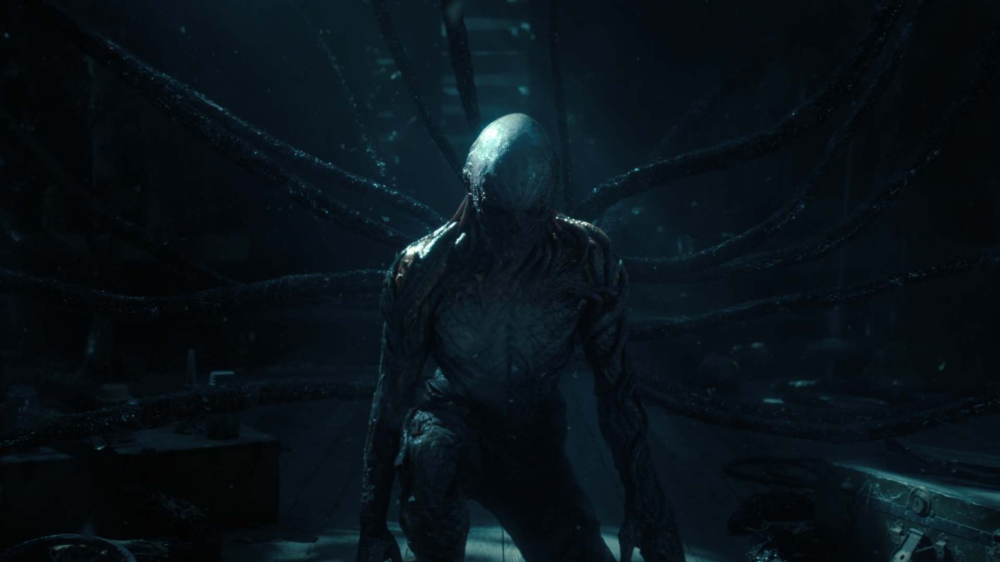
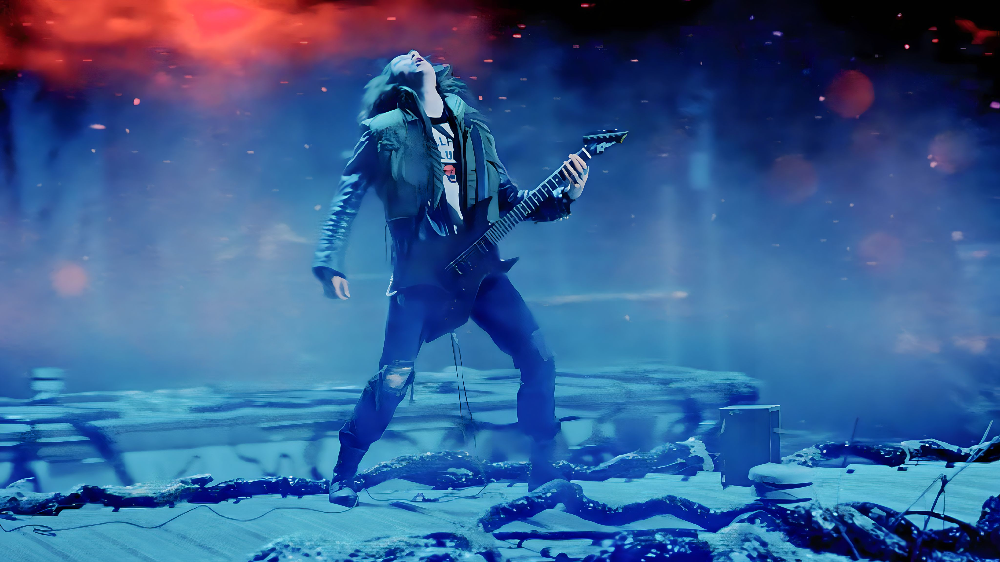
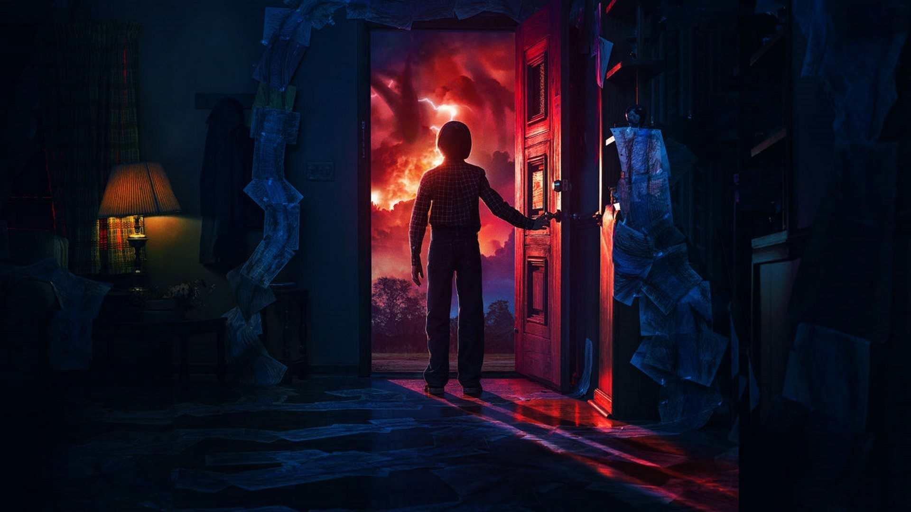
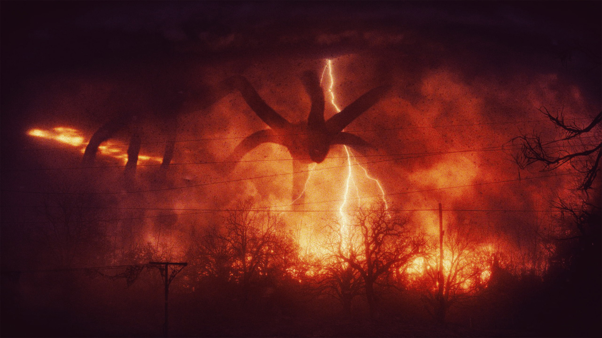
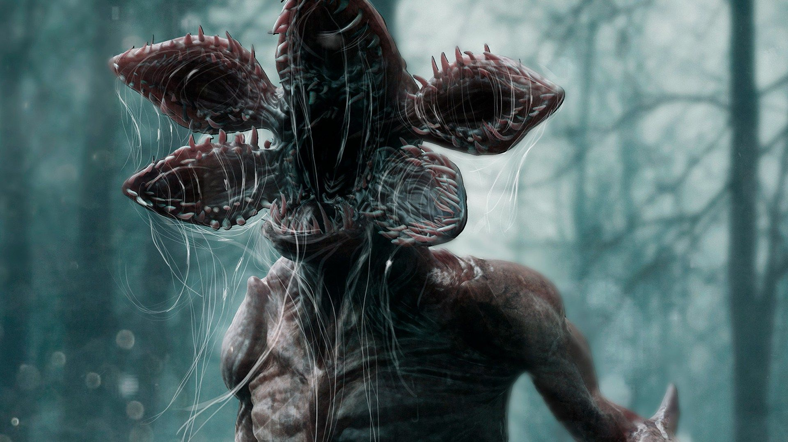
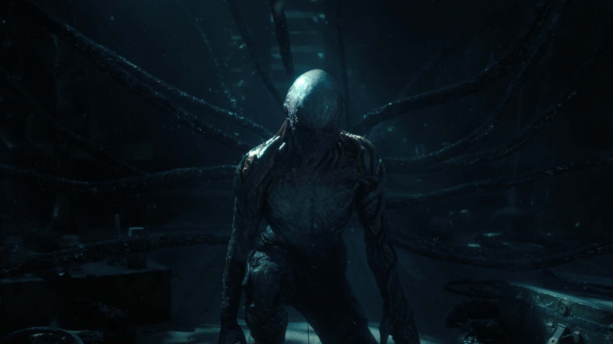
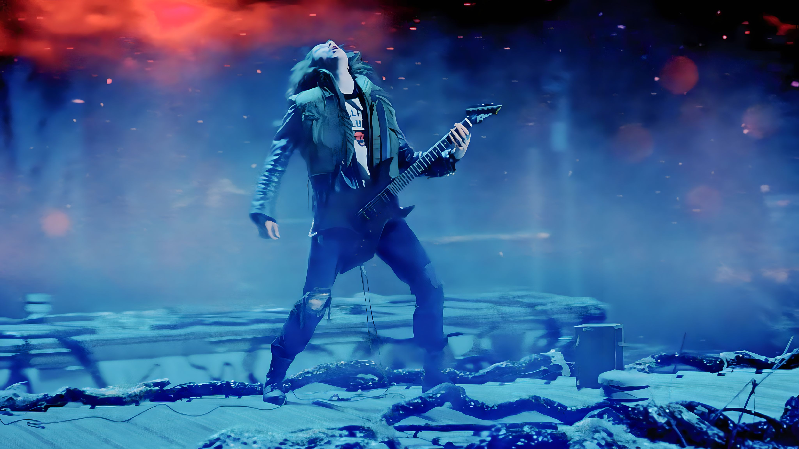
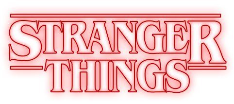
Stranger Things é uma série de televisão americana de suspense e ficção científica, criada pelos irmãos Duffer. Situada nos anos 80, a trama se passa na pequena cidade de Hawkins e segue a história de um grupo de amigos que se unem para desvendar o mistério do desaparecimento de um deles, envolvendo experimentos secretos do governo, um universo paralelo assustador, poderes sobrenaturais e uma trilha sonora marcante.